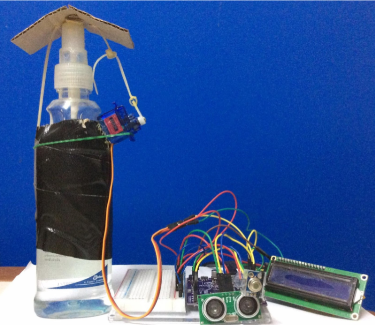
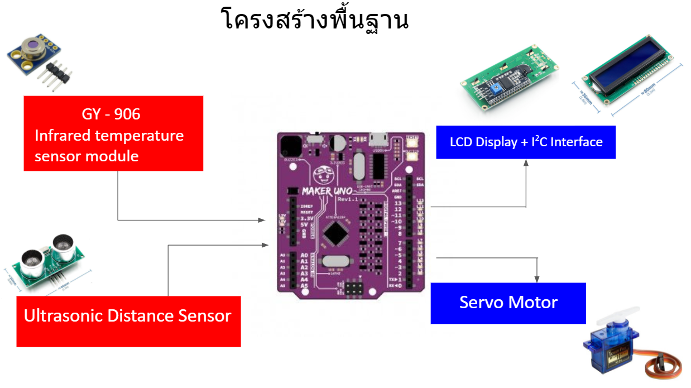
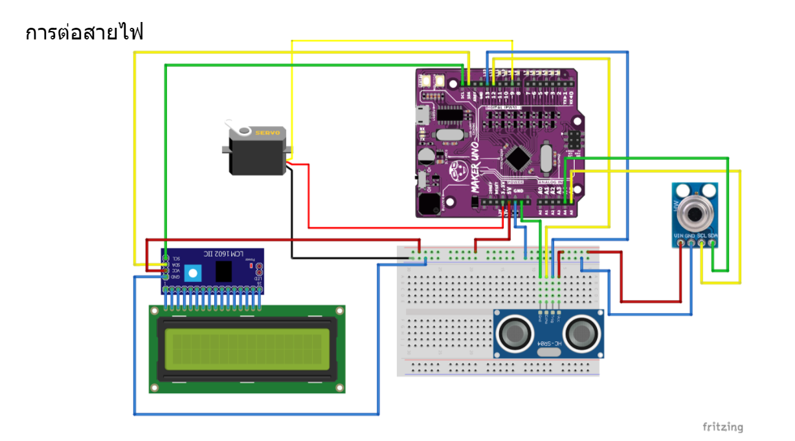

Super Alcohol Dispenser
เครื่องจ่ายแอลกอฮอล์อัตโนมัติ

Design
โครงสร้างพื้นฐาน

ระบบการทำงาน

Project Design
Super Alcohol Dispenser
คือ เครื่องจ่ายแอลกอฮอล์อัติโนมัติ ซึ่งการใช้งานได้โดยไร้การสัมผัส เพียงแค่มีส่วนหนึ่งของร่างกาย เช่น มือ หรือวัตถุ อยู่ตรงกับตัวเซนเซอร์ก็จะสามารถเกิดการทำงาน จะมีแอลกอฮอล์ออกมาจากขวดและยังมีการตรวจจับวัดค่าอุณหภูมิของร่างกายโดยไม่ต้องสัมผัสกับตัวขวดโดยตรงและจะส่งค่าเป็นตัวเลขไปยังหน้าจอที่แสดงค่าอุณหภูมิที่วัดได้เป็นองศาเซลเซียส
ขอบเขตของโปรเจค
1. เครื่องแอลกอฮอล์ที่ไร้การสัมผัส
2. เมื่อนำมือให้อยู่ตรงกับเซนเซอร์ตัวไฟที่บอร์ดArduino ที่ขา9 จะดับ
3. เมื่อใช้เครื่องกดแอลกอฮอล์จะมีแอลกอฮอล์ออกมาพร้อมกับทั้งวัดอุณหภูมิร่างกายของผู้ใช้
4. แสดงค่าอุณหภูมิโดยรอบและอุณหภูมิร่างกาย
5. อุณหภูมิที่วัดได้จะออกมาเป็นหน่วยองศาเซลเซียสและแสดงค่าตัวเลขออกทางหน้าจอ
ที่มาและความสำคัญ
เนื่องด้วยสถานการณ์การระบาดของเชื้อไวรัสโคโรน่า2019 (COVID - 19) ซึ่งเกิดจากสาเหตุหลายประการ เช่น การใกล้ชิดหรือการสัมผัส ไม่ว่าจะเป็นการสัมผัสร่างกายของตนเองกับร่างกายของผู้อื่นหรือการสัมผัสกับวัตถุโดยตรง
ด้วยเหตุนี้ในสภาพแวดล้อมที่ทำให้เกิดปัจจัยความเสี่ยง ทำให้ผู้จัดทำได้เล็งเห็นและนำมาประยุกต์ใช้ การใช้ขวดปั๊มแอลกอฮอล์ในที่สาธารณะต่อจากผู้อื่นโดยการไม่สัมผัสกับขวดโดยตรง จะช่วยลดความเสี่ยงของการติดเชื้อที่อาจเกิดจากการสัมผัส ยังมีการวัดอุณหภูมิของร่างกายขณะที่ขวดปั๊มจ่ายแอลกอฮอล๋และมีการบอกค่าอุณหภูมิเป็นตัวเลข
กลุ่มเป้าหมาย
1.)บุคลากรที่มีความจำเป็นต้องเดินทางไปในพื้นที่เสี่ยง เช่น BTS ห้างสรรพสินค้า และร้านอาหาร ซึ่งเป็นสถานที่มีผู้คนจำนวนมาก
2. ข้าราชการหรือพนักงานที่ต้องใช้ของต่อกันร่วมกับผู้อื่น
3. ประชาชนที่อาศัยอยู่กันเป็นครอบครัวรวมถึงญาติพี่น้องที่เดินทางกลับจากภูมิประเทศอื่น